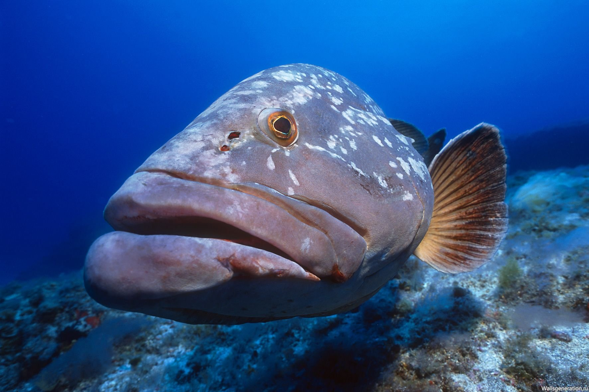

Пресноводные рыбы не могут жить в морской воде. Однако один и тот же представитель водоплавающих, может обитать и в озерах и в горных реках с бурным течением. Но некоторые виды не всегда остаются на одном месте на протяжении всей жизни: они уплывают в моря на нерест.
В список с названиями видов речных и озерных обитателей попали только те, что имеют наибольшую промышленную, кулинарную ценность или интересны с точки зрения поведенческого фактора. Посмотрите внимательно фото каждого представителя для того, чтобы научиться различать один вид от другого, ведь вкусовые качества каждого вида рыбы неповторимы.
использованные при работе ресурсы:
https://a.ya.ru/
Рыба ангел
Рыбы-ангелы (Pomacanthidae) — семейство морских лучепёрых рыб из отряда окунеобразных.
Обладают яркой, пёстрой окраской. Длина рыб-ангелов составляет от 6 до 60 см.
Рыбы-ангелы обитают в тропических широтах всех мировых морей. Девять видов встречаются в Атлантическом океане, остальные — в Индийском и Тихом. Эти рыбы предпочитают жить вблизи коралловых рифов.
Рыба клоун
Рыбы-клоуны, или амфиприоны[1] (лат. Amphiprion), — род морских лучепёрых рыб из семейства помацентровых. Чаще всего под этим названием фигурирует аквариумная рыбка оранжевый амфиприон (Amphiprion percula).
Для рыб-клоунов характерен симбиоз с различными видами актиний. Вначале рыба слегка касается актинии, позволяя ей ужалить себя и выясняя точный состав слизи, которым покрыта актиния, — эта слизь нужна актинии, чтобы она не жалила сама себя. Затем рыба-клоун воспроизводит этот состав и после этого может прятаться от врагов среди щупалец актинии. Рыба-клоун заботится об актинии — вентилирует воду и уносит непереваренные остатки пищи. Рыбки никогда не удаляются далеко от «своей» актинии. Самцы прогоняют от неё самцов, самки — самок. Территориальное поведение, видимо, стало причиной контрастной окраски. Протандрические гермафродиты: все молодые особи — самцы, однако в течение жизни рыба меняет пол. Стимул, запускающий смену пола, — гибель самки.
 Цитрон рыбка
Цитрон рыбка
Цихлазома цитроновая, или лимонная цихлазома (Amphilophus citrinellus) — пресноводная лучепёрая рыба из семейства Цихловые.
Своё видовое название рыбка получила за ярко-золотой окрас тела.
Природный ареал цихлазомы цитроновой включает в себя водоёмы Никарагуа и Коста-Рики. Чаще всего рыбки отдают предпочтение озерам и прудам, хотя встречаются и в медленнотекущих реках. Обитают на глубине от 1 до 5 м в местах, где много камней и коряг.
Макропод
Макропод (Macropodus opercularis) — вид лабиринтовых рыб из семейства макроподовых (Osphronemidae).
Представители этого вида обитают в пресных водоёмах со слабым течением на Дальнем Востоке — от Янцзы до центрального Вьетнама и северного Лаоса. Также они интродуцированы в Корею и Японию.
Макроподы являются распространёнными аквариумными рыбами. Родина этих рыб — Китай, где они обитают преимущественно в канавках рисовых чеков.
 Рыба дори
Рыба дори
Дори — это хищная порода рыб, которая обитает в самых глубинных водах. Ей практически не достаётся солнечного света.
Тело рыбы похоже на камбалу, оно сплющено от высокого давления воды, голова крупная, глаза выпученные. Чешуи почти нет, а плавники покрыты острыми шипами.
Дори считается частью семейства Солнечниковых. У неё есть и другие названия: орео-дори, дори-палтус, солнечник.

Клыкач рыба
Антарктический клыкач (лат. Dissostichus mawsoni) — придонно-пелагическая рыба из семейства нототениевых (Nototheniidae) подотряда нототениевидных (Notothenioidei) отряда окунеобразных (Perciformes).
Это очень крупный вид — самый крупный среди всех нототениевидных и крупнейший среди всех южнополярных рыб, обитающих в окраинных морях Антарктики. Он достигает общей длины около 2 м и массы до 135 кг
Занкл мавританский идол
Рогатый занкл, или мавританский идол (Zanclus cornutus) — вид лучепёрых рыб, единственный в семействе занкловых (Zanclidae) отряда окунеобразных.
Это морская рыба длиной до 22 см. Тело высокое, дисковидное, уплощённое с боков. Высота тела может составлять от 1 до 1,4 длины.
Рогатый занкл обитает в коралловых рифах тропической Индо-Тихоокеанской области на глубине от 3 до 180 м, предпочитая участки с твёрдым морским дном.